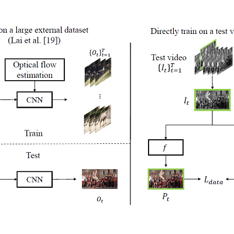

Blind Video Temporal Consistency via
Deep Video Prior
NeurIPS 2020
-
Chenyang Lei*
HKUST -
Yazhou Xing*
HKUST -
Qifeng Chen
HKUST
Abstract
Applying image processing algorithms independently to each video frame often leads to temporal inconsistency in the resulting video. To address this issue, we present a novel and general approach for blind video temporal consistency. Our method is only trained on a pair of original and processed videos directly instead of a large dataset. Unlike most previous methods that enforce temporal consistency with optical flow, we show that temporal consistency can be achieved by training a convolutional network on a video with the Deep Video Prior. Moreover, a carefully designed iteratively reweighted training strategy is proposed to address the challenging multimodal inconsistency problem. We demonstrate the effectiveness of our approach on 7 computer vision tasks on videos. Extensive quantitative and perceptual experiments show that our approach obtains superior performance than state-of-the-art methods on blind video temporal consistency. Our source codes are publicly available at github.com/ChenyangLEI/deep-video-prior.
Technical Video
Motivation & Key idea
We propose a general and simple framework, utilizing the Deep Video Prior by training a convolutional network on videos: the outputs of CNN for corresponding patches in video frames should be consistent. This prior allows to recover most video information first before the flickering artifacts are eventually overfitted. Our framework does not enforce any handcrafted temporal regularization to improve temporal consistency, while previous methods are built upon enforcing feature similarity for correspondences among video frames [3, 19, 39]. Our idea is related to DIP (Deep Image Prior [37]), which observes that the structure of a generator network is sufficient to capture the low-level statistics of a natural image. They take noise as input and train the network to reconstruct an image. The network performs effectively to inverse problems such as image denoising, image inpainting and super-resolution. For instance, the noise-free image will be reconstructed before the noise, since it follows the prior represented by the network. We conjecture that the flickering artifacts in a video are similar to the noise in the temporal domain, which can be corrected by deep video prior.
Architecture
We propose to use a fully convolutional network to mimic the original image operator f while preserving temporal consistency. Only a single video is used for training the network and only a single frame is used in each iteration. We initialize the network randomly, and then it can be optimized in each iteration with a single data term without any explicit regularization: